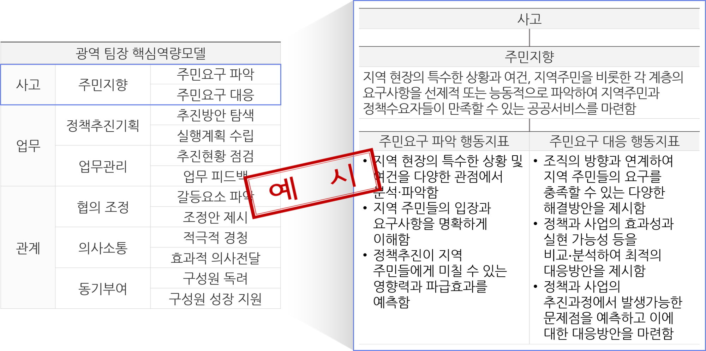

교육과정
역량에 대한 이해
역량에 대한 이해
역량의 개념
우수한 성과를 내는 사람을 보통의 성과를 내는 사람과 비교했을 때 분명하게 드러나는 행동의 차이로, 성과를 예측하거나 설명할 수 있는 다양한 심리·행동적 특성
역량모델의 개념 및 활용
역량모델의 개념
조직 내 역할과 책임에 따라 높은 성과를 창출하는 사람들의 행동특성(역량)을 도출하여 성공적인 업무 수행에 요구되는 역량들을 체계적으로 정리한 표
역량모델의 예시

역량모델의 활용
- 조직의 인재상이 반영되는 명확한 선발 기준 및 체계적인 선발 프로세스를 제공
- 기대되는 직무역량 수준을 제공하여 승진의 기준요소와 인사이동 및 배치 기준을 제공
- 직무에서의 개인의 행동과 행동의 결과에 관한 객관적 정보를 제공하여 성과평가의 기준을 제공
- 조직의 가치와 전략에 맞는 교육훈련 및 개발을 통해 지속적 코칭과 피드백을 제공
모의과제의 개념 및 기법
모의과제의 개념
실제 직무상황과 유사한 상황을 반영하여 교육 및 평가에 적합하도록 가상으로 구성한 실습과제로, 역량학습과 평가에 대한 참가자의 말과 표정, 행동이 쉽게 드러날 수 있도록 구성됨
대표적인 모의과제 기법
| 구두발표 | 역할수행 |
|---|---|
| 업무 관련 다양한 자료를 분석하여 정책기획, 문제해결안을 구상하여 제시, 발표(보고)하는 기법 | 가상의 이슈를 해결하기 위하여 조직구성원이나 외부관계자와 상호작용하며 관련 문제를 해결하는 기법 |
| 서류함기법 | 집단토론 |
|---|---|
| 조직 내·외부 다양한 이해관계자들과 관련 이슈를 해결하기 위하여 정해진 시간에 여러 자료를 보고 업무해결안을 작성하는 기법 | 하나의 주제에 대해 여러 명이 토론하거나 여러 명의 참가자들에게 역할을 제시하고 각 역할에 따라 문제를 해결하기 위하여 다양한 사람들과 토론하는 기법 |
페이지 만족도 및 담당부서 안내
현재 페이지에 만족하십니까?
페이지 내용과 사용 편의성에 대한 의견을 들려주세요.